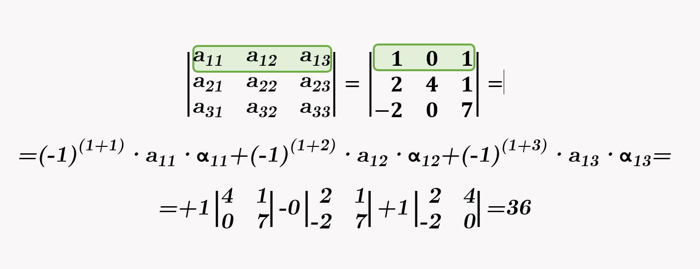
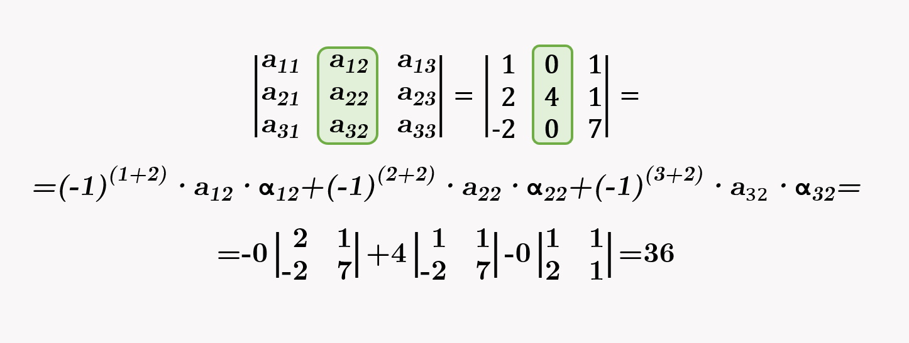

En la década de los 90 del pasado siglo, emitían en la televisión una serie americana cuyo título se traducía por "Los problemas crecen". Ese podría ser el lema de los matemáticos. En cuanto vemos la solución a un determinado problema ya queremos ir un poco más allá. Siempre pensamos qué ocurriría si tenemos más datos o más incógnitas, o si lo que hemos visto hasta el momento se puede generalizar a otros casos más. En general buscamos algoritmos y propiedades que puedan cumplirse en la mayor cantidad de casos. Eso es lo que vamos a hacer en este apartado.
En el punto 1.1 has visto dos reglas, una para hallar el determinante de una matriz cuadrada de orden 2 y otra para la de orden 3, la muy conocida regla de Sarrus. Lamentablemente ya no existen reglas para determinantes de orden superior, por lo que si queremos encontrar el valor del determinante de una matriz cuadrada de orden mayor que 3, tenemos que simplificarla utilizando las propiedades que hemos visto en el punto anterior. Veremos cómo se hace.
Menor complementario. Adjunto. Matriz adjunta.
| En una matriz cuadrada \(A\) se llama menor complementario del término \(a_{ij}\) al determinante de la submatriz que queda al quitar la fila y la columna en la que se encuentra el término \( a_{ij} \). |
Unas veces se representa por \( m_{ij} \) y otras por \( \alpha_{ij} \). Observa el cálculo de alguno de estos elementos en las siguientes tres imágenes:
\( m_{32} = \left| \begin{array}{rr} 2 & 3 \\ 5 & 4 \end{array} \right| = 8 - 15 = -7 \)
\( m_{13} = \left| \begin{array}{rr} 5 & 0 \\ -3 & 6 \end{array} \right| = 30 - 0 = 30 \)
\( m_{21} = \left| \begin{array}{rr} -1 & 3 \\ 6 & 1 \end{array} \right| = -1 - 18 = -19 \)
|
Se define el adjunto de un elemento \( a_{ij} \), y se representa por \( A_{ij} \), al menor complementario de dicho número junto con un signo más o menos, según que la suma de los dos subíndices que representan la posición sea par o impar. Se calcula por la expresión: \[ A_{ij}=\left(-1\right)^{i+j}·m_{ij} \] Llamamos matriz adjunta de \(A\) a aquella en la que se sustituye cada término por su adjunto. Se representa por \(\textrm{Adj(A)}\). |
Ejemplo. Adjunto y menor complementario.
A continuación puedes ver el cálculo del menor complementario y el adjunto de un término. Observa la regla de signos que corresponden a los adjuntos y podrás observar que siempre se alternan comenzado con el signo más. Cada vez que nos movemos, en horizontal o vertical, de un término a otro cambia la paridad entre + y -.
Adjunto y menor complementario de un elemento
\( (-1)^{4+4} \)
| + | - | + | - |
| - | + | - | + |
| + | - | + | - |
| - | + | - | + |
Signos de los adjuntos
(menor)
(adjunto)
Vídeo: hallar la matriz adjunta.
En el siguiente video de abajo puedes ver un ejemplo de como hallar la matriz adjunta de otra: 
Observa cómo al calcular los adjuntos, los signos más y los menos, se alternan.
Desarrollo de un determinante por los elementos de una línea.
Un determinante se puede desarrollar mediante la suma de los productos de cada elemento de una de sus líneas, por su adjunto correspondiente.
En las imágenes siguientes, se representa por \(\alpha_{ij}\) el menor complementario, por lo que el adjunto sería \(\left(-1\right)^{i+j}·\alpha_{ij}\).
Desarrollo de un determinante por los elementos de una fila

Desarrollo de un determinante por los elementos de una columna

Vídeo. Determinante haciendo ceros.
Hay un modo de hacer este proceso más fácil. Consiste en utilizar las propiedades de los determinantes que vimos en el apartado anterior para hacer todos los elementos de una línea, menos uno, ceros. Después desarrollamos por esa línea y solo tenemos que hallar un adjunto, que siempre contendrá un determinante de orden inferior. Esto lo podemos ver explicado, paso a paso, en el siguiente video:
Ejercicio resuelto
Aplica todo lo que has visto al cálculo del determinante \(
\left| \begin{array}{rrrr} 1 & 2 & 1 & -1 \\ 2 & -1 & 5 & -2 \\ 4 & 7 & 3 & 0 \\ 3 & 2 & 4 & -5 \end{array} \right| \)